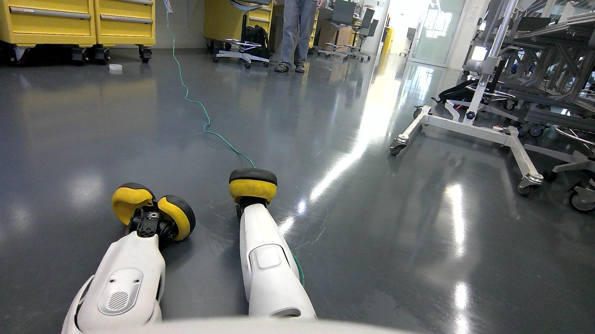
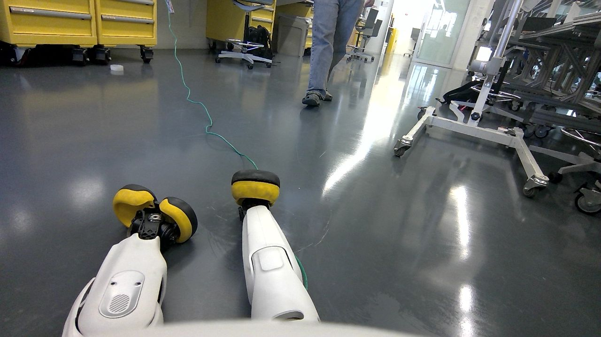
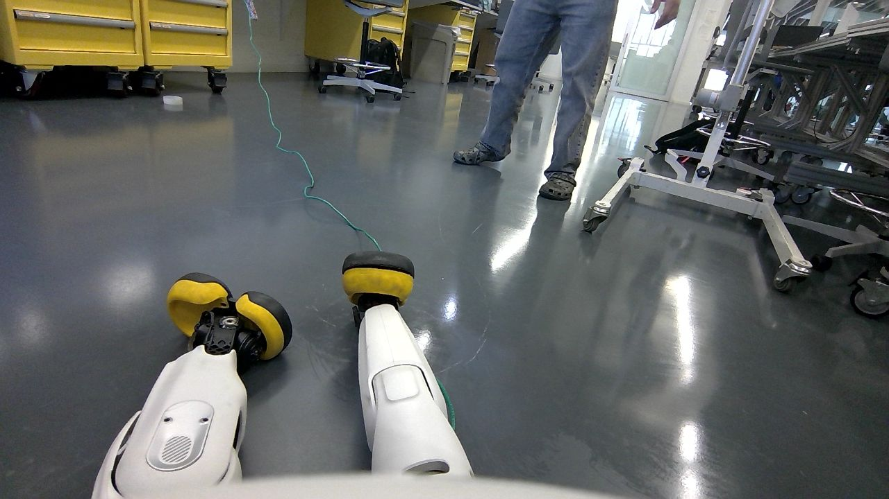
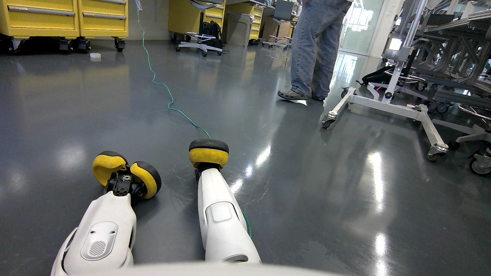
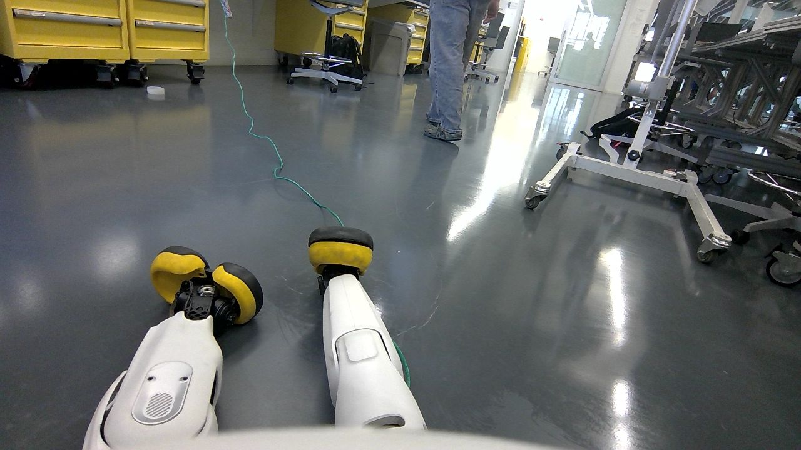
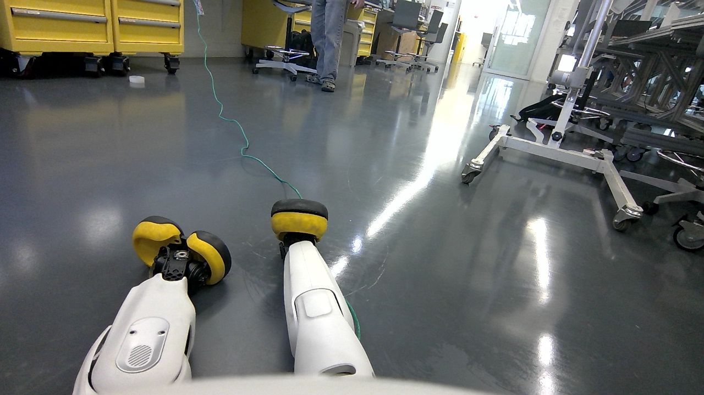
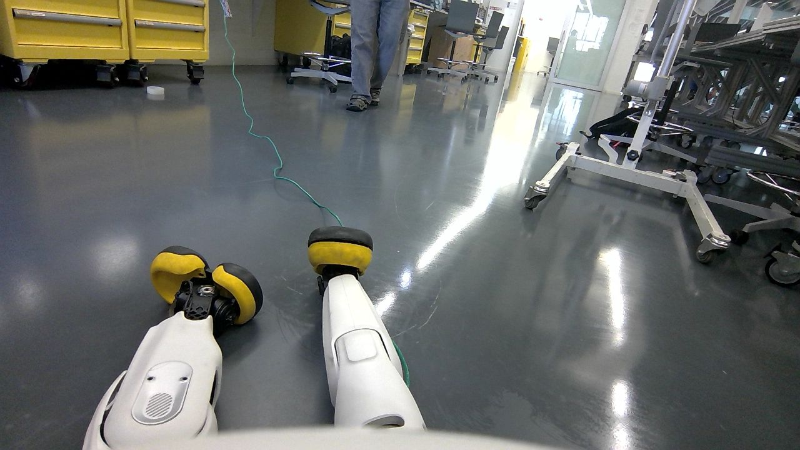
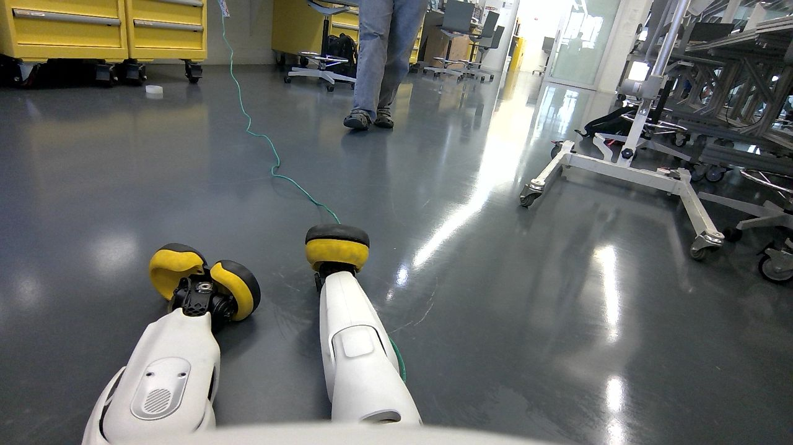

| model | mean s | median s | min s | max s | Hz | gen tok/s |
|---|---|---|---|---|---|---|
| qwen2.5vl:3b | 2.53 | 2.65 | 1.34 | 2.92 | 0.4 | 109.6 |
| qwen2.5vl:7b | 2.98 | 3.14 | 1.48 | 3.69 | 0.34 | 51.2 |
| moondream | 0.7 | 0.72 | 0.42 | 0.87 | 1.43 | 204.9 |
| frame | qwen2.5vl:3b | qwen2.5vl:7b | moondream |
|---|---|---|---|
frame 1 @ 0.052s | 1.339s | 104.4 tok/s - Two robotic arms with yellow wheels, positioned in the center of the image. - A person standing on the right side of the frame, partially visible. - Yellow storage units or carts on the left side of the image. Summary: The robot's vision system captures two robotic arms in the center and a person on the right. | 1.479s | 51.0 tok/s Objects: Yellow cabinets, green cord, white scooter, metal trolley, person in gray pants. People: Person standing near yellow cabinets. Summary: A robot views a workshop area with various equipment and a person nearby. | 0.421s | 193.2 tok/s Person in blue shirt, yellow cart, white cart, and black cart near patient's feet |
 frame 25 @ 1.261s | 2.506s | 110.1 tok/s - Two robotic legs in the foreground, yellow wheels. - Person walking in the background on the right side of the image. - Yellow storage units or carts in the left background. - A large metallic structure with wheels and a platform in the far right. Summary: The robot is moving forward while observing its surroundings. | 3.689s | 50.9 tok/s Main objects: Two white scooters with yellow wheels, green cable, yellow toolboxes, metal trolley, person in gray pants standing near center. People: One person visible wearing gray pants, standing near the center of the image. Summary: A workshop or garage setting with two scooters on the floor and a person nearby. | 0.617s | 212.1 tok/s A person wearing yellow shoes walks by a white machine with black wheels in an empty room. |
frame 50 @ 2.521s | 2.81s | 109.9 tok/s Objects: - Two robotic wheels with yellow edges, positioned in the center of the image. - A green cable running diagonally from the top left to the bottom right. People: - One person standing near a yellow cart on the left side of the image. Summary: The robot is moving forward in an industrial setting, following a green cable while a person stands nearby. | 3.048s | 51.3 tok/s Main objects: Two white scooters with yellow wheels, green cable, yellow toolboxes, metal trolley, person in gray pants walking away. People: Person standing near center-right. Summary: A robot views a workshop area with two scooters and various tools. | 0.609s | 202.4 tok/s Person in white shirt, yellow pants, black shoes, standing near yellow cabinet with green rope on floor. |
frame 75 @ 3.778s | 2.544s | 110.5 tok/s Objects: - Two robotic legs in front of me, white with yellow feet. - A blue-green cable running across the floor. People: - One person walking on the right side of the frame. Summary: I am a robot's vision system observing two robotic legs and a person walking to the right. | 2.775s | 51.8 tok/s Main objects: scooters, yellow cabinets, carts, floor. People: legs in jeans walking right. Summary: A scooter is on a shiny floor with various equipment around it. | 0.759s | 210.8 tok/s Person in blue jeans, white shoes with yellow laces, standing near yellow cart, black dolly, and white dolly in a hospital room. |
 frame 100 @ 5.038s | 2.432s | 110.9 tok/s - Two robotic arms in front of me, yellow and black. - A person walking towards the right side of the image. - Yellow storage units on the left. - A glass door or window at the far end of the room. Summary: I see two robotic arms in front of me with a person walking to the right. | 3.141s | 51.1 tok/s Objects: Yellow cabinets, green cable, white scooter with yellow wheels, metal trolley, person in jeans walking right. People: Person wearing jeans walking towards the right side of the image. Summary: A robot's view shows a workshop area with various equipment and a person walking by. | 0.728s | 212.2 tok/s A person in blue jeans is walking past a white machine with yellow wheels, while another person stands near it. |
 frame 125 @ 6.293s | 2.278s | 109.1 tok/s Main Objects: - Two robotic vacuum cleaners on the floor. - A person walking in the background. People: - One person visible, standing to the right of the image. Summary Sentence: The vision system sees two robotic vacuum cleaners and a person walking in an indoor setting with yellow storage units in the background. | 3.194s | 51.5 tok/s Objects: Two scooters on floor, yellow toolboxes left, person in jeans center-right, metal cart right. People: Person wearing jeans standing near metal cart. Summary: A robot views a workshop with scooters, toolboxes, and a person nearby. | 0.661s | 199.3 tok/s A white robot with yellow wheels is standing on a gray floor next to a person in blue jeans and black shoes. |
 frame 150 @ 7.553s | 2.922s | 110.9 tok/s Objects: - Two robotic legs with yellow wheels on the left. - A person standing in jeans on the right side of the image. Summary: The robot is moving forward, following a person's footsteps as it navigates through an industrial setting. | 2.873s | 51.3 tok/s Objects: scooters, yellow cabinets, person in jeans, medical equipment. People: right side of image. Summary: A scooter is on a floor with a person nearby and medical equipment visible. | 0.84s | 188.6 tok/s Person in blue jeans, standing near yellow cart with white straps, next to a person wearing black shoes and a white shirt. |
 frame 174 @ 8.759s | 2.65s | 110.3 tok/s Objects: - Two robotic arms with yellow and black ends, positioned in front of each other. - A green cable running across the floor. People: - One person standing near a door on the right side of the image. Summary: The robot's vision system sees two robotic arms in front of it, a green cable on the floor, and a person standing by a door. | 2.831s | 51.7 tok/s Main objects: scooters, yellow toolboxes, wheeled carts, glass door. People: partial view of person in jeans near center-right. Summary: A robot views a workshop area with scooters and tools. | 0.717s | 210.4 tok/s Person in blue jeans near yellow cart, person walking away from camera on right, white object behind black object on left. |
frame 199 @ 10.015s | 2.678s | 109.9 tok/s - Two robotic legs with yellow wheels, positioned in the center of the image. - A person standing on the left side of the image, wearing jeans and shoes. - Various equipment and machinery scattered around the room, including a large yellow machine on the far left and a metal structure on the right. Summary: The robot is navigating through an industrial environment with its legs visible in the center. | 3.187s | 51.0 tok/s Main objects: yellow tool cabinets, white scooter-like device with wheels, green cable, metal trolley, person in jeans walking away. People: Person wearing jeans is near the center-right of the image. Summary: A workshop scene featuring a white scooter-like device and various tools. | 0.782s | 208.8 tok/s Person 1: White shoes with yellow wheels, black strap, white leg, black shoe, green cord, gray floor, white wall, white cart, yellow cart, white door, green cord |
 frame 224 @ 11.274s | 2.658s | 110.8 tok/s - Two robotic arms with yellow wheels, positioned in the center of the image. - A person walking on the left side of the frame. - Various equipment and machinery scattered around the room. Summary: The robot's vision system captures a scene featuring two robotic arms in the center, a person to the left, and various pieces of equipment throughout the room. | 3.202s | 50.9 tok/s Objects: Yellow toolboxes, green cord, white scooter-like device with yellow wheels, metal trolley, person in jeans walking away. People: Person wearing jeans is on the right side of the image, walking away from the camera. Summary: A workshop or garage setting with various tools and equipment. | 0.869s | 209.5 tok/s Person in blue shirt, yellow pants, white shoes, black bag, green cord, white cart, gray floor, white wall with yellow box, white pole, white door, white wall with window, white pole, white door, white wall with window. |
 frame 249 @ 12.535s | 2.806s | 108.8 tok/s - Two robotic legs in the foreground, white with yellow tips. - A person walking in the background on the right side of the image. - A large piece of machinery or equipment to the far right. - A blue cord running across the floor from left to center. Summary: The robot is moving forward and observing a person walking towards it. | 3.131s | 50.6 tok/s Main objects: yellow toolboxes, white scooter-like device with wheels, green cord, metal trolley, person in jeans walking away. People: Person wearing jeans is on the right side of the image, moving away from the camera. Summary: A workshop or garage setting with a scooter-like vehicle and tools. | 0.64s | 203.9 tok/s Person in white pants, black shoes, standing near yellow filing cabinet on left side of photo. |
 frame 274 @ 13.79s | 2.728s | 109.5 tok/s - Two robotic devices with yellow wheels, positioned in the center of the image. - A person walking on the left side of the image, partially obscured by the robots. - A large piece of equipment or machinery on the right side of the image. Summary: The image shows two robotic devices centered in a room with a person and a large machine to the right. | 3.16s | 51.2 tok/s Objects: scooters, yellow cabinets, wheels, cables. People: legs in jeans, walking center-right. Summary: A scooter is on the floor with another nearby; a person walks toward the right side of the image near yellow cabinets and other equipment. | 0.738s | 207.5 tok/s Person in blue shirt, white pants, black shoes near yellow cart on gray floor, person with black shoes near yellow cart on gray floor |